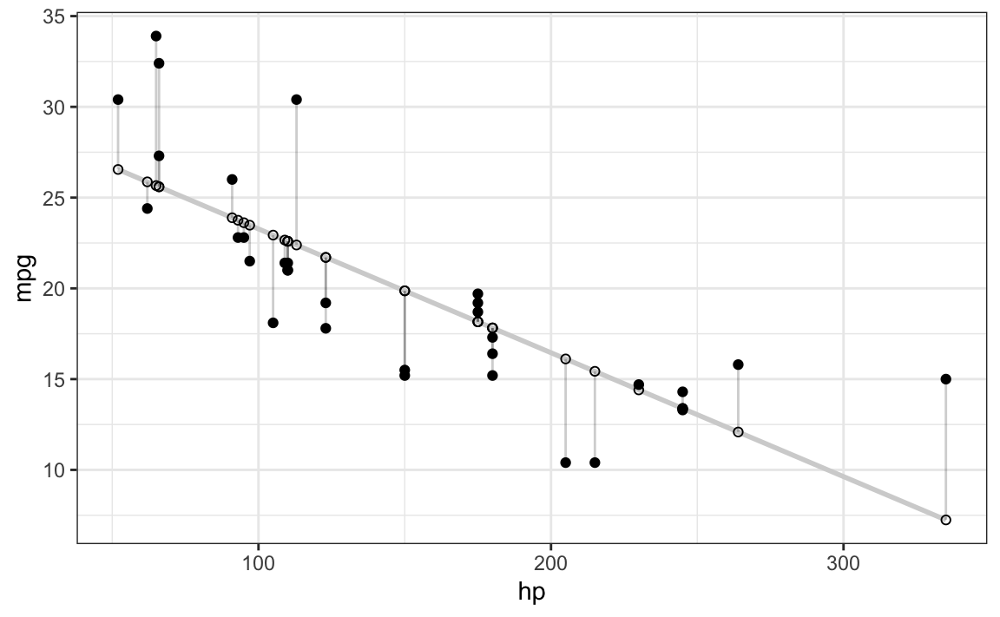

library(tidyverse)The (simple) linear regression is a standard tool in data analysis and statistics. Its properties are well-known but sometimes not known in details to the applied analyst; which is ok. However, if one wishes to understand deeper the internals of the system, the question may arise how to derive the coefficients of the linear regression. Here’s one way.
This approach focues on simple calculus and derivatives; no matrix algebra, and only the simple case for one predictor.
There are many sources and tutorials similar to this around for example this or here.
Simple linear regression is defines such that
\[\hat{y}_i = b_0 + b_1 x_i\]
That’s the regression line.
The regression line is optimal in the sense that it minimizes the squared distances from the line; for example from this source:
library(ggplot2)
d <- mtcars
fit <- lm(mpg ~ hp, data = d)
d$predicted <- predict(fit) # Save the predicted values
d$residuals <- residuals(fit) # Save the residual values
ggplot(d, aes(x = hp, y = mpg)) +
geom_smooth(method = "lm", se = FALSE, color = "lightgrey") + # Plot regression slope
geom_segment(aes(xend = hp, yend = predicted), alpha = .2) + # alpha to fade lines
geom_point() +
geom_point(aes(y = predicted), shape = 1) +
theme_bw() # Add theme for cleaner look
In other words, the residuals minimize this cost function, \(S\):
\[S = \sum(y_i - \hat{y})^2\]
Substituting the \(\hat{y}\) values:
\[S = \sum(y_i - b_0 - b_1 x_i)^2\]
To minimize a function, we can take the first derivative. For functions with more than one variable, we take the partial derivative of the respective parameter. Let’s begin with \(b_0\):
\[\frac{\partial S}{\partial b_0} \left[ \sum (y_i - b_0 - b_1 x_i)^2 \right]\]
Arg, now what? Chain rule to the rescue!
\[\frac{\partial S}{\partial b_0} \sum -2(y_i -b_0 - b_1 x_i)\]
Note that the inner function here simplifies to \(-1\).
Set to zero to get the minimum.
\[\sum -2(y_i -b_0 - b_1 x_i) = 0\]
Now pull out the -2 from the summation and divide both equations by -2:
\[\sum (y_i -b_0 - b_1 x_i) = 0\]
Multiply out the summation:
\[\sum y_i - \sum b_0 - b_1\sum x_i=0\]
Note that the sum of a constant is \(n\) times the constant: \(\sum k = nk\).
Using the above term we get:
\[\sum y_i - nb_0 - b_1\sum x_i=0\]
Now solve for \(b_0\):
\[ b_0 = \frac{ \sum y_i - b_1 \sum x_i}{n}\]
And that’s simply the mean of \(y\) and \(x\)!
\[b_0 = \bar{y} - b_1 \bar{x}\]
Get the partial derivative w.r.t. \(b_1\):
\[\frac{\partial S}{\partial b_1} \sum -2(y_i -b_0 - b_1 x_i)\]
That gives us, set to zero:
\[ \sum -2x_i (y_i - b_0 - b_1x_i) = 0\]
Divide by -2:
\[\sum x_i (y_i - b_0 - b_1 x_i)=0\]
Redistribute \(x_i\):
\[\sum (x_i y_i - b_0 x_i - b_1 x_i^2) = 0\]
As we already now \(b_0\), let’s substitute that back in:
\[\sum(x_i y_i - (\bar{y} - b_1\bar{x})x_i - b_1x^2_i) = 0\]
Split in two sums:
\[\sum(x_iy_i - \bar{y}x_i) + \sum(b_1\bar{x}x_i - b_1x_i^2)=0\]
We would like to isolate \(b_1\), so let’s get this guy more isolated:
\[\sum(x_iy_i - \bar{y}x_i) + b_1 \sum(\bar{x}x_i - x_i^2)=0\]
To finally isolate, substract the first sum and divide by the second:
\[b_1 = \frac{ \sum (x_i y_i - \bar{y}x_i)} { \sum (x^2_i - \bar{x}x_i)}\]
Yeah! Here we go, there we have \(b_1\).